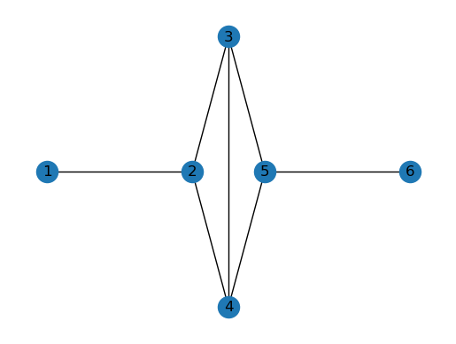

Toolkit Example 2: Insert Nodes and Pipes via SirGraf Python Console
This Example demonstrates how to generate Toolkit commands that create a graph of nodes and pipes in a SIR 3S model. The user is encouraged to copy the code into the sript tab of the SIR 3S Python console to create the graph in a model. It is also demonstrated how to use Toolkit to get model data of node and pipes and create a networkx graph based on it.
Imports
[1]:
import networkx as nx
import math
import matplotlib.pyplot as plt
import random
import pandas as pd
import os
[2]:
import clr as net
net.AddReference(r"C:\3S\SIR 3S Entwicklung\SirGraf-90-15-00-04x64\Sir3S_Repository.Interfaces.dll") #Change to local path
[2]:
<System.Reflection.RuntimeAssembly object at 0x000001EB7E422A80>
[3]:
import PythonWrapperToolkit
from PythonWrapperToolkit import SIR3S_Model, SIR3S_View
import Sir3S_Repository.Interfaces as Interfaces
NetworkX
Cretate edges connecting nodes
[4]:
spnG = nx.Graph()
[5]:
spnG.add_edge(1, 2, L=1000, D=150)
spnG.add_edge(2, 3, L=math.sqrt(2*math.pow(250,2)), D=100)
spnG.add_edge(2, 4, L=math.sqrt(2*math.pow(250,2)), D=100)
spnG.add_edge(3, 4, L=500, D=100)
spnG.add_edge(3, 5, L=math.sqrt(2*math.pow(250,2)), D=100)
spnG.add_edge(4, 5, L=math.sqrt(2*math.pow(250,2)), D=100)
spnG.add_edge(5, 6, L=1000, D=150)
Set Node positions
[6]:
pos = {
1: (0, 1250),
2: (1000, 1250),
3: (1250, 1500),
4: (1250, 1000),
5: (1500, 1250),
6: (2500, 1250),
}
[7]:
for node, (x, y) in pos.items():
nx.set_node_attributes(spnG, {node: x}, 'x')
nx.set_node_attributes(spnG, {node: y}, 'y')
nx.set_node_attributes(spnG, {node: 0}, 'z')
Draw
[8]:
fig, ax = plt.subplots()
nx.draw(spnG, pos=pos, ax=ax)
nx.draw_networkx_labels(spnG, pos)
plt.show()

Generate Toolkit Commands from NX Graph
[9]:
def generate_toolkit_commands(graph, session_name="DefaultSession"):
commands = [
"import PythonWrapperToolkit",
"import Sir3S_Repository.Interfaces as Interfaces",
"s3s = PythonWrapperToolkit.SIR3S_Model()",
f"s3s.StartTransaction(SessionName='{session_name}')"
]
# Generate commands for nodes
for node in graph.nodes(data=True):
node_tk = node[0]
x_coord = node[1]['x']
y_coord = node[1]['y']
z_coord = node[1]['z']
# Create the command to insert the node
insert_command = f"node{node_tk} = s3s.InsertElement(ElementType=Interfaces.Sir3SObjectTypes.Node)"
commands.append(insert_command)
# Create the commands to set the node's coordinates
set_x_command = f"s3s.SetValue(node{node_tk}, 'Xkor', '{x_coord}')"
set_y_command = f"s3s.SetValue(node{node_tk}, 'Ykor', '{y_coord}')"
set_z_command = f"s3s.SetValue(node{node_tk}, 'Zkor', '{z_coord}')"
commands.append(set_x_command)
commands.append(set_y_command)
commands.append(set_z_command)
# Generate commands for pipes
for edge in graph.edges(data=True):
node1, node2 = edge[0], edge[1]
# Create the command to insert the pipe
pipe_tk = f"pipe{node1}_{node2}"
insert_pipe_command = f"{pipe_tk} = s3s.InsertElement(ElementType=Interfaces.Sir3SObjectTypes.Pipe)"
commands.append(insert_pipe_command)
# Create the command to connect the pipe with nodes
connect_command = f"s3s.ConnectConnectingElementWithNodes({pipe_tk}, node{node1}, node{node2})"
commands.append(connect_command)
# End the transaction
commands.append("s3s.EndTransaction()")
return commands
[10]:
commands = generate_toolkit_commands(spnG, session_name="DefaultSession")
for command in commands:
print(command)
import PythonWrapperToolkit
import Sir3S_Repository.Interfaces as Interfaces
s3s = PythonWrapperToolkit.SIR3S_Model()
s3s.StartTransaction(SessionName='DefaultSession')
node1 = s3s.InsertElement(ElementType=Interfaces.Sir3SObjectTypes.Node)
s3s.SetValue(node1, 'Xkor', '0')
s3s.SetValue(node1, 'Ykor', '1250')
s3s.SetValue(node1, 'Zkor', '0')
node2 = s3s.InsertElement(ElementType=Interfaces.Sir3SObjectTypes.Node)
s3s.SetValue(node2, 'Xkor', '1000')
s3s.SetValue(node2, 'Ykor', '1250')
s3s.SetValue(node2, 'Zkor', '0')
node3 = s3s.InsertElement(ElementType=Interfaces.Sir3SObjectTypes.Node)
s3s.SetValue(node3, 'Xkor', '1250')
s3s.SetValue(node3, 'Ykor', '1500')
s3s.SetValue(node3, 'Zkor', '0')
node4 = s3s.InsertElement(ElementType=Interfaces.Sir3SObjectTypes.Node)
s3s.SetValue(node4, 'Xkor', '1250')
s3s.SetValue(node4, 'Ykor', '1000')
s3s.SetValue(node4, 'Zkor', '0')
node5 = s3s.InsertElement(ElementType=Interfaces.Sir3SObjectTypes.Node)
s3s.SetValue(node5, 'Xkor', '1500')
s3s.SetValue(node5, 'Ykor', '1250')
s3s.SetValue(node5, 'Zkor', '0')
node6 = s3s.InsertElement(ElementType=Interfaces.Sir3SObjectTypes.Node)
s3s.SetValue(node6, 'Xkor', '2500')
s3s.SetValue(node6, 'Ykor', '1250')
s3s.SetValue(node6, 'Zkor', '0')
pipe1_2 = s3s.InsertElement(ElementType=Interfaces.Sir3SObjectTypes.Pipe)
s3s.ConnectConnectingElementWithNodes(pipe1_2, node1, node2)
pipe2_3 = s3s.InsertElement(ElementType=Interfaces.Sir3SObjectTypes.Pipe)
s3s.ConnectConnectingElementWithNodes(pipe2_3, node2, node3)
pipe2_4 = s3s.InsertElement(ElementType=Interfaces.Sir3SObjectTypes.Pipe)
s3s.ConnectConnectingElementWithNodes(pipe2_4, node2, node4)
pipe3_4 = s3s.InsertElement(ElementType=Interfaces.Sir3SObjectTypes.Pipe)
s3s.ConnectConnectingElementWithNodes(pipe3_4, node3, node4)
pipe3_5 = s3s.InsertElement(ElementType=Interfaces.Sir3SObjectTypes.Pipe)
s3s.ConnectConnectingElementWithNodes(pipe3_5, node3, node5)
pipe4_5 = s3s.InsertElement(ElementType=Interfaces.Sir3SObjectTypes.Pipe)
s3s.ConnectConnectingElementWithNodes(pipe4_5, node4, node5)
pipe5_6 = s3s.InsertElement(ElementType=Interfaces.Sir3SObjectTypes.Pipe)
s3s.ConnectConnectingElementWithNodes(pipe5_6, node5, node6)
s3s.EndTransaction()
Testing with randomized graph
[11]:
# Function to create a random graph on a 2500x2500 grid
def create_random_graph(num_nodes, num_edges):
G = nx.Graph()
for i in range(1, num_nodes + 1):
x = random.randint(0, 2500)
y = random.randint(0, 2500)
G.add_node(i, x=x, y=y, z=0)
for _ in range(num_edges):
node1 = random.randint(1, num_nodes)
node2 = random.randint(1, num_nodes)
if node1 != node2:
G.add_edge(node1, node2)
return G
[12]:
graph1 = create_random_graph(30, 40) #numbe of nodes/edges
[13]:
commands_graph1 = generate_toolkit_commands(graph1, session_name="Graph1Session")
[14]:
for command in commands_graph1:
print(command)
import PythonWrapperToolkit
import Sir3S_Repository.Interfaces as Interfaces
s3s = PythonWrapperToolkit.SIR3S_Model()
s3s.StartTransaction(SessionName='Graph1Session')
node1 = s3s.InsertElement(ElementType=Interfaces.Sir3SObjectTypes.Node)
s3s.SetValue(node1, 'Xkor', '2145')
s3s.SetValue(node1, 'Ykor', '2061')
s3s.SetValue(node1, 'Zkor', '0')
node2 = s3s.InsertElement(ElementType=Interfaces.Sir3SObjectTypes.Node)
s3s.SetValue(node2, 'Xkor', '791')
s3s.SetValue(node2, 'Ykor', '1793')
s3s.SetValue(node2, 'Zkor', '0')
node3 = s3s.InsertElement(ElementType=Interfaces.Sir3SObjectTypes.Node)
s3s.SetValue(node3, 'Xkor', '929')
s3s.SetValue(node3, 'Ykor', '2378')
s3s.SetValue(node3, 'Zkor', '0')
node4 = s3s.InsertElement(ElementType=Interfaces.Sir3SObjectTypes.Node)
s3s.SetValue(node4, 'Xkor', '879')
s3s.SetValue(node4, 'Ykor', '1907')
s3s.SetValue(node4, 'Zkor', '0')
node5 = s3s.InsertElement(ElementType=Interfaces.Sir3SObjectTypes.Node)
s3s.SetValue(node5, 'Xkor', '1944')
s3s.SetValue(node5, 'Ykor', '1005')
s3s.SetValue(node5, 'Zkor', '0')
node6 = s3s.InsertElement(ElementType=Interfaces.Sir3SObjectTypes.Node)
s3s.SetValue(node6, 'Xkor', '129')
s3s.SetValue(node6, 'Ykor', '461')
s3s.SetValue(node6, 'Zkor', '0')
node7 = s3s.InsertElement(ElementType=Interfaces.Sir3SObjectTypes.Node)
s3s.SetValue(node7, 'Xkor', '372')
s3s.SetValue(node7, 'Ykor', '1521')
s3s.SetValue(node7, 'Zkor', '0')
node8 = s3s.InsertElement(ElementType=Interfaces.Sir3SObjectTypes.Node)
s3s.SetValue(node8, 'Xkor', '1813')
s3s.SetValue(node8, 'Ykor', '1698')
s3s.SetValue(node8, 'Zkor', '0')
node9 = s3s.InsertElement(ElementType=Interfaces.Sir3SObjectTypes.Node)
s3s.SetValue(node9, 'Xkor', '952')
s3s.SetValue(node9, 'Ykor', '685')
s3s.SetValue(node9, 'Zkor', '0')
node10 = s3s.InsertElement(ElementType=Interfaces.Sir3SObjectTypes.Node)
s3s.SetValue(node10, 'Xkor', '70')
s3s.SetValue(node10, 'Ykor', '2031')
s3s.SetValue(node10, 'Zkor', '0')
node11 = s3s.InsertElement(ElementType=Interfaces.Sir3SObjectTypes.Node)
s3s.SetValue(node11, 'Xkor', '936')
s3s.SetValue(node11, 'Ykor', '1885')
s3s.SetValue(node11, 'Zkor', '0')
node12 = s3s.InsertElement(ElementType=Interfaces.Sir3SObjectTypes.Node)
s3s.SetValue(node12, 'Xkor', '2018')
s3s.SetValue(node12, 'Ykor', '1278')
s3s.SetValue(node12, 'Zkor', '0')
node13 = s3s.InsertElement(ElementType=Interfaces.Sir3SObjectTypes.Node)
s3s.SetValue(node13, 'Xkor', '1555')
s3s.SetValue(node13, 'Ykor', '1488')
s3s.SetValue(node13, 'Zkor', '0')
node14 = s3s.InsertElement(ElementType=Interfaces.Sir3SObjectTypes.Node)
s3s.SetValue(node14, 'Xkor', '2222')
s3s.SetValue(node14, 'Ykor', '728')
s3s.SetValue(node14, 'Zkor', '0')
node15 = s3s.InsertElement(ElementType=Interfaces.Sir3SObjectTypes.Node)
s3s.SetValue(node15, 'Xkor', '1243')
s3s.SetValue(node15, 'Ykor', '937')
s3s.SetValue(node15, 'Zkor', '0')
node16 = s3s.InsertElement(ElementType=Interfaces.Sir3SObjectTypes.Node)
s3s.SetValue(node16, 'Xkor', '865')
s3s.SetValue(node16, 'Ykor', '1524')
s3s.SetValue(node16, 'Zkor', '0')
node17 = s3s.InsertElement(ElementType=Interfaces.Sir3SObjectTypes.Node)
s3s.SetValue(node17, 'Xkor', '651')
s3s.SetValue(node17, 'Ykor', '1155')
s3s.SetValue(node17, 'Zkor', '0')
node18 = s3s.InsertElement(ElementType=Interfaces.Sir3SObjectTypes.Node)
s3s.SetValue(node18, 'Xkor', '832')
s3s.SetValue(node18, 'Ykor', '1164')
s3s.SetValue(node18, 'Zkor', '0')
node19 = s3s.InsertElement(ElementType=Interfaces.Sir3SObjectTypes.Node)
s3s.SetValue(node19, 'Xkor', '591')
s3s.SetValue(node19, 'Ykor', '898')
s3s.SetValue(node19, 'Zkor', '0')
node20 = s3s.InsertElement(ElementType=Interfaces.Sir3SObjectTypes.Node)
s3s.SetValue(node20, 'Xkor', '402')
s3s.SetValue(node20, 'Ykor', '383')
s3s.SetValue(node20, 'Zkor', '0')
node21 = s3s.InsertElement(ElementType=Interfaces.Sir3SObjectTypes.Node)
s3s.SetValue(node21, 'Xkor', '102')
s3s.SetValue(node21, 'Ykor', '417')
s3s.SetValue(node21, 'Zkor', '0')
node22 = s3s.InsertElement(ElementType=Interfaces.Sir3SObjectTypes.Node)
s3s.SetValue(node22, 'Xkor', '954')
s3s.SetValue(node22, 'Ykor', '637')
s3s.SetValue(node22, 'Zkor', '0')
node23 = s3s.InsertElement(ElementType=Interfaces.Sir3SObjectTypes.Node)
s3s.SetValue(node23, 'Xkor', '347')
s3s.SetValue(node23, 'Ykor', '2315')
s3s.SetValue(node23, 'Zkor', '0')
node24 = s3s.InsertElement(ElementType=Interfaces.Sir3SObjectTypes.Node)
s3s.SetValue(node24, 'Xkor', '1190')
s3s.SetValue(node24, 'Ykor', '2054')
s3s.SetValue(node24, 'Zkor', '0')
node25 = s3s.InsertElement(ElementType=Interfaces.Sir3SObjectTypes.Node)
s3s.SetValue(node25, 'Xkor', '2325')
s3s.SetValue(node25, 'Ykor', '1967')
s3s.SetValue(node25, 'Zkor', '0')
node26 = s3s.InsertElement(ElementType=Interfaces.Sir3SObjectTypes.Node)
s3s.SetValue(node26, 'Xkor', '1261')
s3s.SetValue(node26, 'Ykor', '2020')
s3s.SetValue(node26, 'Zkor', '0')
node27 = s3s.InsertElement(ElementType=Interfaces.Sir3SObjectTypes.Node)
s3s.SetValue(node27, 'Xkor', '1371')
s3s.SetValue(node27, 'Ykor', '2017')
s3s.SetValue(node27, 'Zkor', '0')
node28 = s3s.InsertElement(ElementType=Interfaces.Sir3SObjectTypes.Node)
s3s.SetValue(node28, 'Xkor', '280')
s3s.SetValue(node28, 'Ykor', '710')
s3s.SetValue(node28, 'Zkor', '0')
node29 = s3s.InsertElement(ElementType=Interfaces.Sir3SObjectTypes.Node)
s3s.SetValue(node29, 'Xkor', '972')
s3s.SetValue(node29, 'Ykor', '1681')
s3s.SetValue(node29, 'Zkor', '0')
node30 = s3s.InsertElement(ElementType=Interfaces.Sir3SObjectTypes.Node)
s3s.SetValue(node30, 'Xkor', '210')
s3s.SetValue(node30, 'Ykor', '535')
s3s.SetValue(node30, 'Zkor', '0')
pipe1_7 = s3s.InsertElement(ElementType=Interfaces.Sir3SObjectTypes.Pipe)
s3s.ConnectConnectingElementWithNodes(pipe1_7, node1, node7)
pipe1_15 = s3s.InsertElement(ElementType=Interfaces.Sir3SObjectTypes.Pipe)
s3s.ConnectConnectingElementWithNodes(pipe1_15, node1, node15)
pipe1_21 = s3s.InsertElement(ElementType=Interfaces.Sir3SObjectTypes.Pipe)
s3s.ConnectConnectingElementWithNodes(pipe1_21, node1, node21)
pipe1_5 = s3s.InsertElement(ElementType=Interfaces.Sir3SObjectTypes.Pipe)
s3s.ConnectConnectingElementWithNodes(pipe1_5, node1, node5)
pipe2_24 = s3s.InsertElement(ElementType=Interfaces.Sir3SObjectTypes.Pipe)
s3s.ConnectConnectingElementWithNodes(pipe2_24, node2, node24)
pipe2_7 = s3s.InsertElement(ElementType=Interfaces.Sir3SObjectTypes.Pipe)
s3s.ConnectConnectingElementWithNodes(pipe2_7, node2, node7)
pipe2_3 = s3s.InsertElement(ElementType=Interfaces.Sir3SObjectTypes.Pipe)
s3s.ConnectConnectingElementWithNodes(pipe2_3, node2, node3)
pipe3_19 = s3s.InsertElement(ElementType=Interfaces.Sir3SObjectTypes.Pipe)
s3s.ConnectConnectingElementWithNodes(pipe3_19, node3, node19)
pipe4_20 = s3s.InsertElement(ElementType=Interfaces.Sir3SObjectTypes.Pipe)
s3s.ConnectConnectingElementWithNodes(pipe4_20, node4, node20)
pipe4_29 = s3s.InsertElement(ElementType=Interfaces.Sir3SObjectTypes.Pipe)
s3s.ConnectConnectingElementWithNodes(pipe4_29, node4, node29)
pipe4_21 = s3s.InsertElement(ElementType=Interfaces.Sir3SObjectTypes.Pipe)
s3s.ConnectConnectingElementWithNodes(pipe4_21, node4, node21)
pipe4_15 = s3s.InsertElement(ElementType=Interfaces.Sir3SObjectTypes.Pipe)
s3s.ConnectConnectingElementWithNodes(pipe4_15, node4, node15)
pipe5_23 = s3s.InsertElement(ElementType=Interfaces.Sir3SObjectTypes.Pipe)
s3s.ConnectConnectingElementWithNodes(pipe5_23, node5, node23)
pipe5_24 = s3s.InsertElement(ElementType=Interfaces.Sir3SObjectTypes.Pipe)
s3s.ConnectConnectingElementWithNodes(pipe5_24, node5, node24)
pipe5_17 = s3s.InsertElement(ElementType=Interfaces.Sir3SObjectTypes.Pipe)
s3s.ConnectConnectingElementWithNodes(pipe5_17, node5, node17)
pipe6_27 = s3s.InsertElement(ElementType=Interfaces.Sir3SObjectTypes.Pipe)
s3s.ConnectConnectingElementWithNodes(pipe6_27, node6, node27)
pipe6_15 = s3s.InsertElement(ElementType=Interfaces.Sir3SObjectTypes.Pipe)
s3s.ConnectConnectingElementWithNodes(pipe6_15, node6, node15)
pipe6_28 = s3s.InsertElement(ElementType=Interfaces.Sir3SObjectTypes.Pipe)
s3s.ConnectConnectingElementWithNodes(pipe6_28, node6, node28)
pipe7_8 = s3s.InsertElement(ElementType=Interfaces.Sir3SObjectTypes.Pipe)
s3s.ConnectConnectingElementWithNodes(pipe7_8, node7, node8)
pipe7_27 = s3s.InsertElement(ElementType=Interfaces.Sir3SObjectTypes.Pipe)
s3s.ConnectConnectingElementWithNodes(pipe7_27, node7, node27)
pipe8_22 = s3s.InsertElement(ElementType=Interfaces.Sir3SObjectTypes.Pipe)
s3s.ConnectConnectingElementWithNodes(pipe8_22, node8, node22)
pipe9_12 = s3s.InsertElement(ElementType=Interfaces.Sir3SObjectTypes.Pipe)
s3s.ConnectConnectingElementWithNodes(pipe9_12, node9, node12)
pipe9_23 = s3s.InsertElement(ElementType=Interfaces.Sir3SObjectTypes.Pipe)
s3s.ConnectConnectingElementWithNodes(pipe9_23, node9, node23)
pipe11_17 = s3s.InsertElement(ElementType=Interfaces.Sir3SObjectTypes.Pipe)
s3s.ConnectConnectingElementWithNodes(pipe11_17, node11, node17)
pipe11_26 = s3s.InsertElement(ElementType=Interfaces.Sir3SObjectTypes.Pipe)
s3s.ConnectConnectingElementWithNodes(pipe11_26, node11, node26)
pipe11_22 = s3s.InsertElement(ElementType=Interfaces.Sir3SObjectTypes.Pipe)
s3s.ConnectConnectingElementWithNodes(pipe11_22, node11, node22)
pipe12_26 = s3s.InsertElement(ElementType=Interfaces.Sir3SObjectTypes.Pipe)
s3s.ConnectConnectingElementWithNodes(pipe12_26, node12, node26)
pipe12_16 = s3s.InsertElement(ElementType=Interfaces.Sir3SObjectTypes.Pipe)
s3s.ConnectConnectingElementWithNodes(pipe12_16, node12, node16)
pipe14_25 = s3s.InsertElement(ElementType=Interfaces.Sir3SObjectTypes.Pipe)
s3s.ConnectConnectingElementWithNodes(pipe14_25, node14, node25)
pipe14_16 = s3s.InsertElement(ElementType=Interfaces.Sir3SObjectTypes.Pipe)
s3s.ConnectConnectingElementWithNodes(pipe14_16, node14, node16)
pipe15_27 = s3s.InsertElement(ElementType=Interfaces.Sir3SObjectTypes.Pipe)
s3s.ConnectConnectingElementWithNodes(pipe15_27, node15, node27)
pipe15_24 = s3s.InsertElement(ElementType=Interfaces.Sir3SObjectTypes.Pipe)
s3s.ConnectConnectingElementWithNodes(pipe15_24, node15, node24)
pipe17_19 = s3s.InsertElement(ElementType=Interfaces.Sir3SObjectTypes.Pipe)
s3s.ConnectConnectingElementWithNodes(pipe17_19, node17, node19)
pipe18_27 = s3s.InsertElement(ElementType=Interfaces.Sir3SObjectTypes.Pipe)
s3s.ConnectConnectingElementWithNodes(pipe18_27, node18, node27)
pipe19_30 = s3s.InsertElement(ElementType=Interfaces.Sir3SObjectTypes.Pipe)
s3s.ConnectConnectingElementWithNodes(pipe19_30, node19, node30)
pipe19_25 = s3s.InsertElement(ElementType=Interfaces.Sir3SObjectTypes.Pipe)
s3s.ConnectConnectingElementWithNodes(pipe19_25, node19, node25)
pipe20_25 = s3s.InsertElement(ElementType=Interfaces.Sir3SObjectTypes.Pipe)
s3s.ConnectConnectingElementWithNodes(pipe20_25, node20, node25)
pipe20_22 = s3s.InsertElement(ElementType=Interfaces.Sir3SObjectTypes.Pipe)
s3s.ConnectConnectingElementWithNodes(pipe20_22, node20, node22)
pipe23_29 = s3s.InsertElement(ElementType=Interfaces.Sir3SObjectTypes.Pipe)
s3s.ConnectConnectingElementWithNodes(pipe23_29, node23, node29)
s3s.EndTransaction()
Feel free to execute the toolkit commands as a script to recreate the graph in SirGraf and compare it to the graph plotted above. You might need to change the grid size in SirGraf.
[15]:
fig, ax = plt.subplots(figsize=(7, 7))
pos_graph1 = {node: (data['x'], data['y']) for node, data in graph1.nodes(data=True)}
nx.draw(graph1, pos=pos_graph1, ax=ax)
ax.set_title("Graph 1")
plt.show()
Create NetworkX graph from SIR 3S Model
s3s
[16]:
s3s = PythonWrapperToolkit.SIR3S_Model()
Initialization complete
[29]:
# file path
try:
from PT3S import dxAndMxHelperFcts
except:
import dxAndMxHelperFcts
dbFilename="Toolkit_Example1"
dbFile=os.path.join(os.path.dirname(os.path.abspath(dxAndMxHelperFcts.__file__))
+'/Examples/Toolkit_Examples/'
+dbFilename
+'.db3'
)
[30]:
s3s.OpenModel(dbName=dbFile,
providerType=Interfaces.SirDBProviderType.SQLite,
Mid="M-1-0-1",
saveCurrentlyOpenModel = True,
namedInstance="",
userID="",
password="")
Model is open for further operation
[31]:
node_tks = s3s.GetTksofElementType(ElementType=Interfaces.Sir3SObjectTypes.Node)
pipe_tks = s3s.GetTksofElementType(ElementType=Interfaces.Sir3SObjectTypes.Pipe)
[32]:
nodes_data = []
pipes_data = []
[33]:
# Retrieve node data
for node_tk in node_tks:
x_coord, _ = s3s.GetValue(node_tk, 'Xkor')
y_coord, _ = s3s.GetValue(node_tk, 'Ykor')
node_name, _ = s3s.GetValue(node_tk, 'Name')
nodes_data.append({
'node_tk': node_tk,
'node_name': node_name,
'x_coord': x_coord.replace(',', '.'),
'y_coord': y_coord.replace(',', '.')
})
[34]:
# Retrieve pipe data
for pipe_tk in pipe_tks:
from_node, _ = s3s.GetValue(pipe_tk, 'FromNode.Name')
to_node, _ = s3s.GetValue(pipe_tk, 'ToNode.Name')
pipes_data.append({
'pipe_tk': pipe_tk,
'from_node': from_node,
'to_node': to_node
})
[35]:
nodes_df = pd.DataFrame(nodes_data)
pipes_df = pd.DataFrame(pipes_data)
[36]:
# Filter out nodes with x < 700000 and y < 5000000
nodes_df['x_coord'] = nodes_df['x_coord'].astype(float)
nodes_df['y_coord'] = nodes_df['y_coord'].astype(float)
filtered_nodes_df = nodes_df[(nodes_df['x_coord'] >= 700000) & (nodes_df['y_coord'] >= 5000000)]
[37]:
G = nx.Graph()
[38]:
# Add nodes
for _, row in filtered_nodes_df.iterrows():
G.add_node(row['node_tk'], x=row['x_coord'], y=row['y_coord'], z=0)
[39]:
# Add edges (pipes) between nodes
for _, row in pipes_df.iterrows():
from_node_name = row['from_node']
to_node_name = row['to_node']
from_node_tk = filtered_nodes_df[filtered_nodes_df['node_name'] == from_node_name]['node_tk'].values[0]
to_node_tk = filtered_nodes_df[filtered_nodes_df['node_name'] == to_node_name]['node_tk'].values[0]
if from_node_tk in G.nodes and to_node_tk in G.nodes:
G.add_edge(from_node_tk, to_node_tk)
[40]:
pos = {node: (data['x'], data['y']) for node, data in G.nodes(data=True) if 'x' in data and 'y' in data}
nx.draw(G, pos, with_labels=False, node_size=10, node_color='skyblue', font_size=10, font_weight='bold')
plt.show()